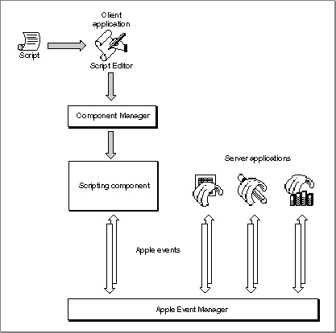

Legacy Document
Important: The information in this document is obsolete and should not be used for new development.
Important: The information in this document is obsolete and should not be used for new development.


Supporting AppleScript and Other Scripting Languages
A script is any collection of data that, when executed by the appropriate program, causes a corresponding action or series of actions. For example, some database, telecommunications, and page-layout applications allow users to automate repetitive or conditional tasks by means of scripts written in proprietary scripting languages. The HyperTalk\xC6 scripting language allows users to control the behavior of HyperCard \xC6 stacks. Macro programs can automate tasks at the level of mouse clicks and keystrokes. The Open Scripting Architecture (OSA) provides a standard mechanism that allows users to control multiple applications with scripts written in a variety of scripting languages. Each scripting language has a corresponding scripting component. When a scripting component executes a script, it performs the actions described in the script, including sending Apple events to applications if necessary.
The OSA comprises the following parts:
The AppleScript component, which implements the AppleScript scripting language, is the implementation of the OSA provided by Apple Computer, Inc. Users can view a script written in the AppleScript scripting language in several different dialects, or versions of the AppleScript language that resemble specific human languages or programming languages.
- The Apple Event Manager allows applications to respond to Apple events sent by scripting components (see the previous section, "Sending and Responding to Apple Events").
- The Apple Event Registry: Standard Suites defines the standard vocabulary of Apple events.
- The standard scripting component data structures, routines, and resources allow applications to interact with any scripting component.
- The AppleScript component implements the AppleScript scripting language.
Figure 1-7 shows the relationships among some of these parts. The client application in Figure 1-7 is Script Editor, an application provided by Apple Computer, Inc., that allows users to record, edit, and execute scripts. The client application could also be any other application that uses the standard scripting component routines to execute scripts. Script Editor uses the Component Manager to open a connection with the scripting component that created the script to be executed.
Figure 1-7 How a scripting component executes a script

Like sound resources, scripts can be stored in applications and documents as well as in distinct script files that can be manipulated from the Finder. Script Editor allows users to execute scripts stored in script files. Users can also execute special script files called script applications simply by opening them from the Finder.
During script execution, scripting components perform actions described in the script, using the Apple Event Manager to send Apple events when necessary. The server applications shown in Figure 1-7 use the Apple Event Manager to examine the contents of the Apple events they receive and to respond appropriately. A server application always responds to the same Apple event in the same way, regardless of whether the event is sent by a scripting component or directly by a client application.
You can take advantage of the OSA in three ways:
The sections that follow describe these three kinds of scripting capabilities in more detail. The chapter "Introduction to Scripting" in this book provides an overview of the way scripting components work and how you can implement support for scripting in your application.
- You can make your application scriptable, or capable of responding to Apple events sent to it by a scripting component. An application is scriptable if it
- Responds to the appropriate standard Apple events. See the previous section, "Sending and Responding to Apple Events."
- Provides an Apple event terminology extension (
'aete') resource that describes which Apple events your application supports and the corresponding human-language terminology for use in scripts. The'aete'resource allows scripting components to interpret scripts correctly and send the appropriate Apple events to your application during script execution.By executing scripts, users of scriptable applications can perform almost any task that they would otherwise perform by choosing menu commands, typing, and so on. Users can also execute scripts to perform many tasks that might otherwise be difficult to accomplish, especially repetitive or conditional tasks that involve multiple applications.
- You can make your application recordable--that is, capable of sending Apple events to itself in response to user actions such as choosing a menu command or changing the contents of a document. After a user has turned on recording for a particular scripting component, the scripting component receives copies of all subsequent Apple events and records them in the form of a script.
- You can have your application manipulate and execute scripts with the aid of a scripting component. To do so, your application must
- use the Component Manager to open a connection with the appropriate component
- use the standard scripting component routines to record, edit, compile, save, load, or execute scripts when necessary
Users of applications that execute scripts can modify the applications' behavior by editing the scripts. For example, a user of an invoice program might be able to write a script that checks and if necessary updates customer information in a separate database application each time the user posts an invoice.
Subtopics
- Scriptable Applications
- Recordable Applications
- Applications That Manipulate and Execute Scripts